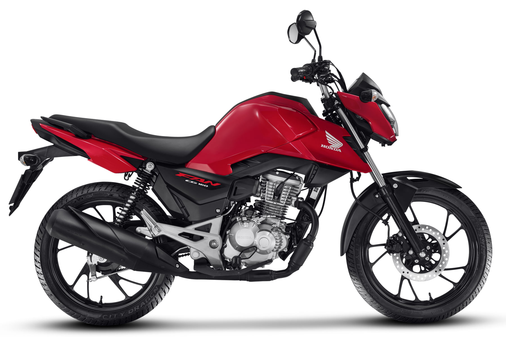
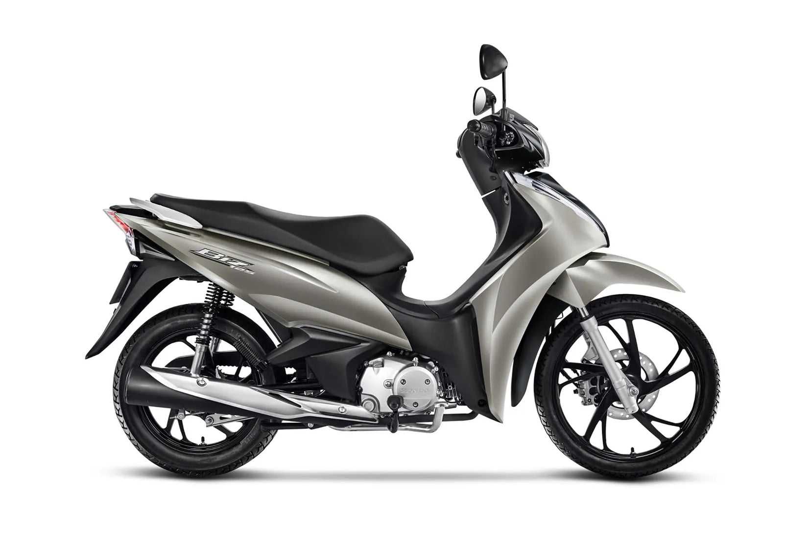
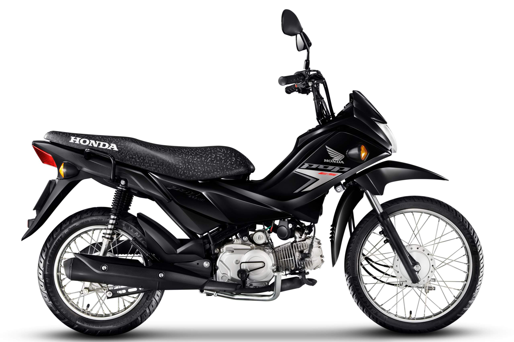
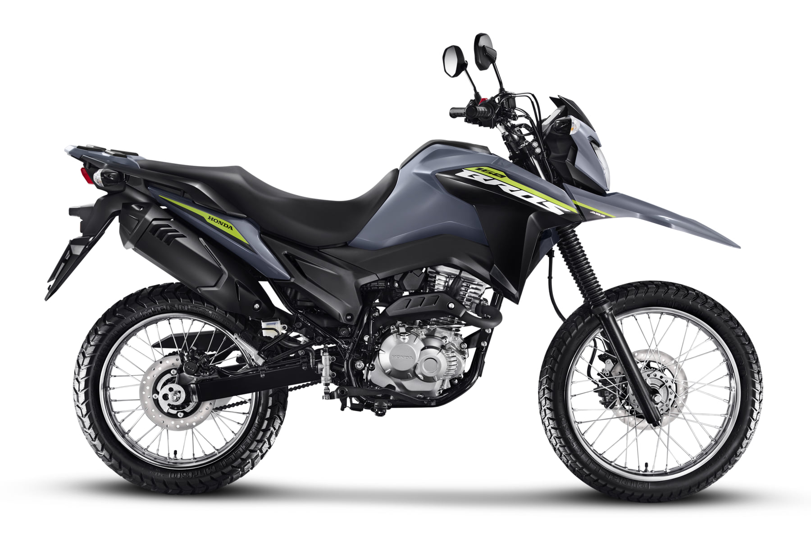
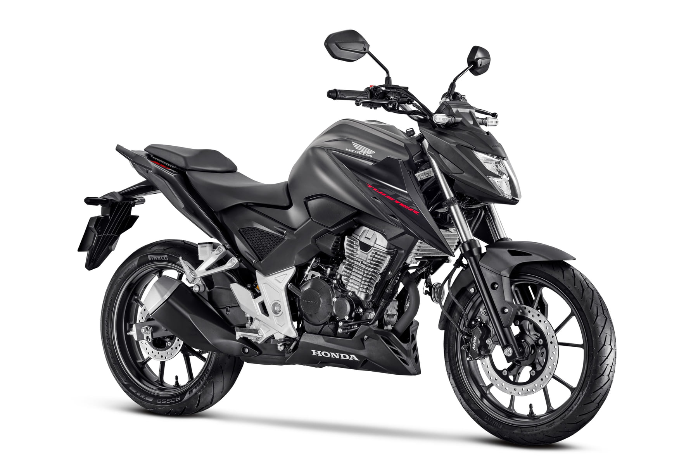
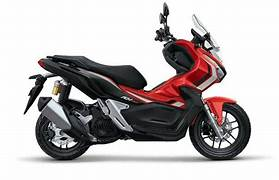
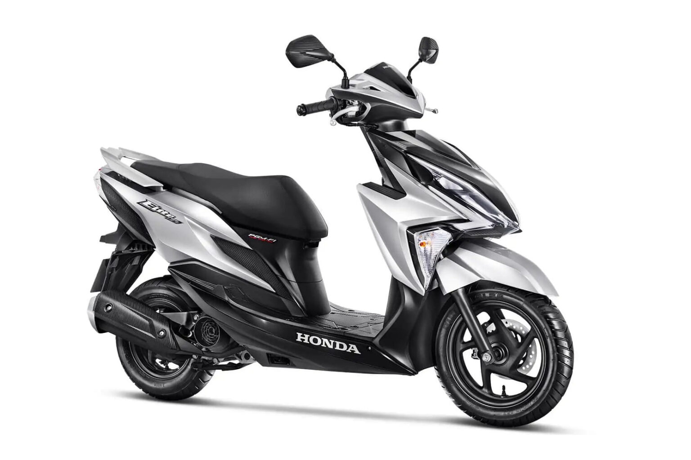

Motos Honda: Guia Completo dos Modelos Populares no Brasil em 2026
As motos Honda dominam o mercado brasileiro há décadas, representando mais de 80% das vendas em categorias como street e trail de baixa cilindrada. Em 2026, a marca continua inovando com motores flex, sistemas de freios avançados e designs modernos, atendendo desde iniciantes até profissionais que precisam de veículos confiáveis para o dia a dia. Se você busca motos Honda no Brasil, este guia cobre os modelos mais vendidos, preços atualizados, especificações técnicas e características chave. Com foco em economia e durabilidade, as motos Honda são ideais para uso urbano, rural ou misto, ajudando a reduzir custos com combustível e manutenção.
A Honda investe em tecnologias como o sistema FlexOne (para gasolina/etanol) e freios CBS/ABS, melhorando segurança e eficiência. No ranking Fenabrave de fevereiro 2026, a CG 160 liderou com mais de 25 mil unidades emplacadas, seguida pela Biz 125 e Pop 110i. Abaixo, uma análise detalhada dos principais modelos motos Honda, com dados de desempenho, consumo e dicas para escolha. Esses veículos são conhecidos pela rede ampla de concessionárias (mais de 1.000 no Brasil), facilitando assistência e peças originais.
Principais Modelos Motos Honda em 2026
Os modelos motos Honda variam de entradas econômicas a opções mais potentes. Aqui vai uma tabela comparativa com preços sugeridos (sem frete, sujeitos a variação regional), specs de motor e características principais. Use a barra de pesquisa acima para filtrar por modelo.
| Modelo | Preço Aprox. (2026) | Motor / Potência | Principais Características |
|---|---|---|---|
|
 Honda CG 160 |
R$ 13.490 – R$ 15.990 (Start a Titan) | 162,7 cc FlexOne / 14,9 cv (gasolina) | Mais vendida do Brasil, consumo de até 45 km/l, freios CBS, painel digital, ideal para trabalho e cidade. Transmissão de 5 marchas, tanque 16,1 litros. |
|
 Honda Biz 125 |
R$ 13.240+ | 124,9 cc Flex / 9,2 cv | Câmbio semiautomático, porta-objetos sob o banco, consumo ~40 km/l, freios CBS, perfeita para entregas e uso feminino. Peso leve (100 kg), partida elétrica. |
|
 Honda Pop 110i |
R$ 10.380+ | 109,1 cc Flex / 7,9 cv | Entrada mais barata, super econômica (até 50 km/l), freios CBS, design simples, ótima para iniciantes. Tanque 4 litros, peso 87 kg, transmissão de 4 marchas. |
|
 Honda NXR 160 Bros |
R$ 20.490 – R$ 22.260 (CBS/ABS) | 162,7 cc Flex / 14,7 cv | Trail versátil, suspensão elevada (247 mm solo), consumo 40 km/l, freios ABS disponível, boa para estradas ruins. Rodas raiadas, tanque 12 litros. |
|
 Honda CB 300F Twister |
R$ 22.000 – R$ 25.000 | 293,5 cc / 24,7 cv | Naked esportiva, painel digital, freios ABS, consumo 30 km/l, torque 2,6 kgfm, ideal para mais potência. Transmissão 6 marchas, velocidade max ~140 km/h. |
 Honda PCX 160
Honda PCX 160
|
R$ 17.000+ | 156,9 cc / 13 cv | Scooter premium, consumo até 45 km/l, partida sem chave, freios ABS, painel digital, ideal para uso urbano com conforto e tecnologia. Tanque 8 litros, peso 128 kg, transmissão CVT automática. |
 Honda XRE 300
Honda XRE 300
|
R$ 26.000+ | 291,6 cc / 25,4 cv | Trail adventure, suspensão elevada, consumo 30 km/l, freios ABS, boa para off-road e viagens, robusta com protetor de motor. Tanque 13,8 litros, peso 148 kg, transmissão de 5 marchas. |
 Honda CB 500F
Honda CB 500F
|
R$ 35.000+ | 471 cc / 50,4 cv | Naked intermediária, painel digital, freios ABS, consumo 27 km/l, torque equilibrado para cidade e estrada. Tanque 16,7 litros, peso 189 kg, transmissão de 6 marchas. |
|
 Honda ADV 150 |
R$ 39.000+ | 149 cc / 13 cv | Scooter adventure, suspensão alta, consumo 40 km/l, freios ABS, design off-road com para-brisa, ideal para uso misto. Tanque 8 litros, peso 133 kg, transmissão CVT automática. |
|
 Honda Elite 125 |
R$ 14.500+ | 124,9 cc / 9,3 cv | Scooter compacta, consumo 45 km/l, freios CBS, painel digital, porta-objetos, ótima para mobilidade urbana. Tanque 6,4 litros, peso 104 kg, transmissão CVT automática. |
Preços são sugeridos (sem frete), sujeitos a variação. Dados de fevereiro 2026, fonte Fenabrave e Honda oficial. Para mais detalhes, acesse links dos modelos.
Por Que Escolher Motos Honda em 2026?
As motos Honda se destacam pela inovação e confiabilidade. Em 2026, a linha inclui motores flexíveis que otimizam consumo em gasolina ou etanol, reduzindo emissões e custos. Por exemplo, a CG 160, com injeção eletrônica PGM-FI, oferece partida a frio eficiente e baixa manutenção. A rede de concessionárias Honda cobre todo o Brasil, com peças originais baratas e garantia de até 3 anos. Para uso urbano, modelos como Biz 125 facilitam o dia a dia com armazenamento prático; para off-road leve, a Bros 160 é imbatível. Comparada a concorrentes, as motos Honda têm melhor revenda (até 90% do valor após 1 ano) e durabilidade comprovada em testes de quilometragem alta.
Dicas para Comprar Motos Honda
Ao buscar motos Honda, considere seu uso: para economia, opte pela Pop 110i; para potência, CB 300F. Verifique promoções no site oficial Honda, onde há simuladores de financiamento. Em 2026, foco em segurança com ABS em mais modelos reduz acidentes. Manutenção anual média: R$ 800-1.200, com óleo e filtros acessíveis. Evite usadas sem histórico; prefira certificadas. As motos Honda atendem normas Euro 5, com baixa emissão, ideais para cidades poluídas.
Tendências das Motos Honda no Brasil
Em 2026, a Honda planeja eletrificação, mas modelos a combustão como CG dominam. Vendas cresceram 5% em 2025, impulsionadas por entregas. Para entusiastas, a Twister oferece upgrades como embreagem deslizante. Consulte o site Honda para recalls ou atualizações.